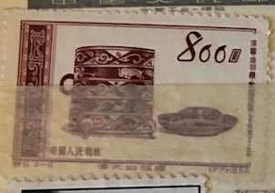
| SOURCE | TITLE| IMAGE MATCH | click to source page |
| eBay | China - 1954 Glorious Mother Country | eBay | 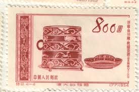 |
| HipStamp | China Stamps: 1954 SC# 225-8-Glorious Mother Coutry #5 Mint Stamps Very Rare | Asia - China, General Issue Stamp / HipStamp | 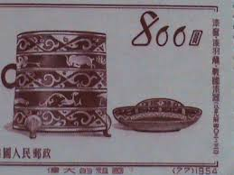 |
| eBay | China, Peoples Rep. of, Scott 225-228 (1954) Mint NH VF Complete Set, CV$8.00 C | eBay | 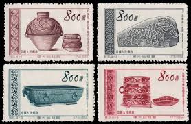 |
| eBay | CHINA - MNG SET - POSTAGE DUE - 1954. | eBay | 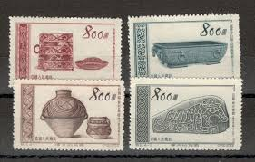 |
| eBay | PR China Stamps S8 Economic, S9 Relics, S12 Electric, S14 Highways 特8, 9, 12, 14 | eBay | 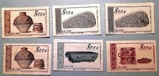 |
| DeqiStamps.com | China stamps year 1954 Glorious Mother Country set | 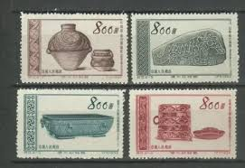 |
| eBay | PRC China Stamps, 1954, sc#225-28, Mint, NH, NGAI, Complete Set | eBay | 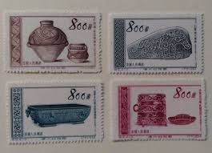 |
| eBay | China Stamp - 1954 Glorious Mother Country 5th Series / Archeological Treasures | eBay | 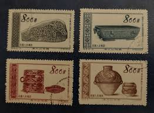 |
| eBay | China Stamps -中国邮票-伟大的祖国（第五套）：古代文物- 1954, S9, Scott 225-228s - MNH, F-VF | eBay | 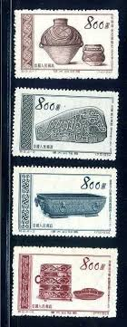 |
| eBay | China PRC stamps #225-8 No Gum As Issued | eBay | 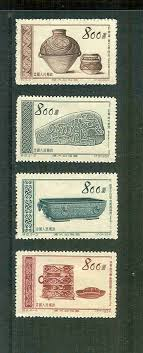 |
| Invaluable.com | Sold at Auction: 1938-1944 Japan (Occupied China) 5 Yen Note, Heigo Overprint P# M25 Grades vf, very fine | 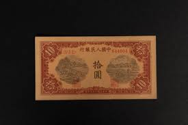 |
| eBay | China 10 Yuan 1949 P-817a * PMG AU 53 * Original & Rare * | eBay | 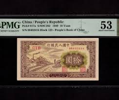 |
| eBay | BANK OF CHINA 100 YUAN Rare PAGODA TEST NOTE x 100 Pcs Lot BUNDLE CHINESE | eBay | 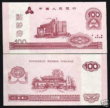 |
| eBay | CHINA PRC Sc#225-8 1954 S9 Glorious Motherland - 5, Archeological Treasures MNH | eBay | 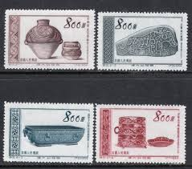 |
| eBay | China S9 Ancient Cultural Relics Set of 4v - Used (SL136) | eBay | 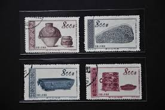 |
| eBay | Tangstamps: China PRC #198-201 S7 & #225-228 S9 MNH NGAI Natural Offset | eBay | 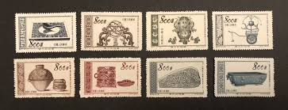 |
| eBay | China 1954 - Mint stamps issued without gum. Mi nr.: 249/252 ... (VG) MV-13943 | eBay | 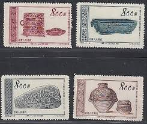 |
| eBay | CHINA, 1945, 10 Yuan, Federal Reserve Bank of CHINA, PMG 64, P# J86b | eBay | 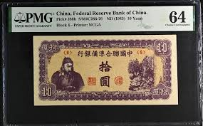 |
| notafilia-kp.com | Federal Reserve Bank of China, 10 yuan, 1945 | notafilia-kp.com | 110387 | paper money | 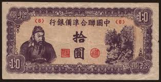 |
| eBay | 1952-54 PRC #138 238 *No gum as issued* 7 MH stamp sets | eBay | 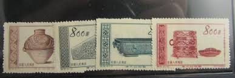 |
| eBay | Rare China Banknotes 1949 5000 Yuan PMG 55 Central S/N CG168727 TheOgleMines 矿场 | eBay | 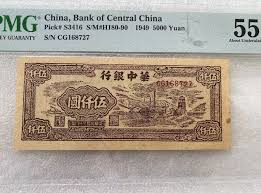 |
| eBay | CHINESE Banknote 20 yuan 1st Edition (1949, for collection) #S558 | eBay | 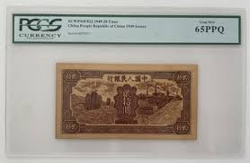 |
| eBay | 1945 10 Yuan China puppet Bank PJ 86 b | eBay | 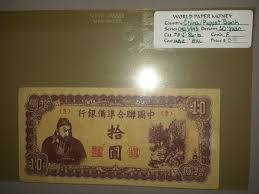 |
| eBay | UNC] 1945 China 10 Yuan P-J86b Block-4 [004-3] | eBay | 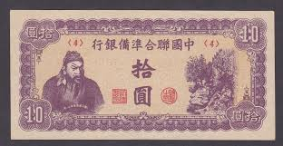 |
| eBay | China 1947 Banknote 500 Yuan, P-381 Manchurian Provinces, Great Wall of China | eBay | 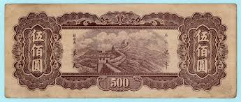 |
| eBay | 1946 100 Yuan China PMG 55 Bank of Shansi Chahar&Hopei S/N K147879 Banknotes . | eBay | 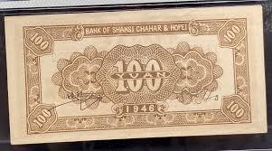 |
| eBay | China, Federal Reserve Bank, 10 Yuan, 1945, Gem UNC-PMG65EPQ, P-J86b | eBay | 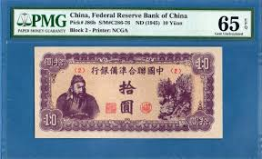 |
| eBay | China One Fen 1953 P860b Uncirculated Grade 65 | eBay | 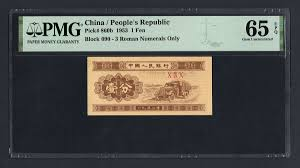 |
| eBay | Vietnam P-58 1000 Dong 1950-51 Circle w/ Star Watermark LCG 55 | eBay | 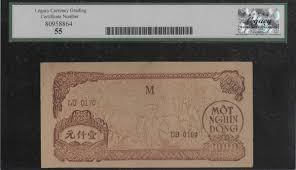 |
| eBay | CHINA CHINESE HELLNOTE 10000 YUAN UNCIRCULATED BANKNOTE PAPER MONEY CURRENCY | eBay | 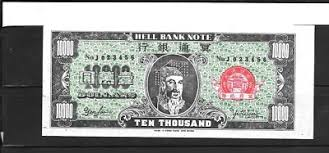 |
| eBay | China PRC Stamps: 1954 Archaeological Treasures. SC 225-5 Mint NH | eBay | 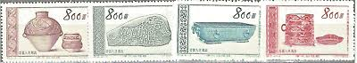 |
| eBay | China 500 Yuan ND. 1947 Series EG Circulated Banknote NYR | eBay | 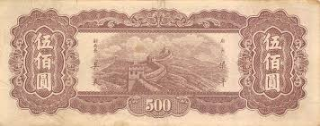 |
| eBay | Rare China Banknote Kung Tsi Fengtien 1922 100 Coppers PMG 65 EPQ lithograph | eBay | 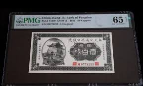 |
| eBay | PCGS Currency Grade 66 Chinese Paper Money for sale | eBay | 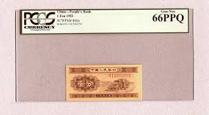 |
| eBay | 1945 One Thousand Yuan Series 51-d Blue Note Or Bill | eBay | 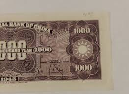 |
| eBay | China Bank of Rehher Sheeng 1947 100 Yuan S3427 VF | eBay | 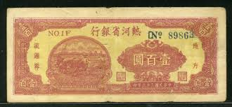 |
| eBay | China - 1941 100 Yuan Banknote (J45) - Neat Design! | eBay | 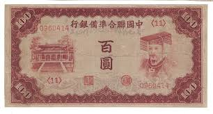 |
| eBay | Lot of 6 Chinese Ration Coupons #20774 | eBay | 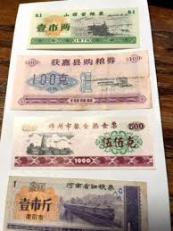 |
| eBay | China Federal Reserve Bank 1 Fen, 1938, P J46, AU | eBay | 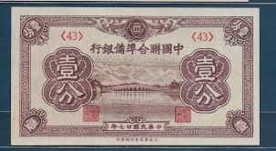 |
| eBay | CHINA PRC 1954 GLORIUS MOTHER COUNTRY 5th SERIES (Sc 225-228) VF MNH | eBay | 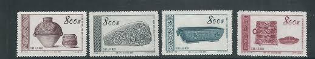 |
| eBay | China 10,000 Yuan P-386 1948 VF+/EF | eBay | 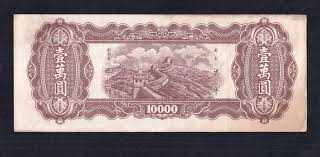 |
| Xabusiness.com | S7 Scott 198-201 Great Motherland (4th Set):Ancient Inventions - China Stamps | 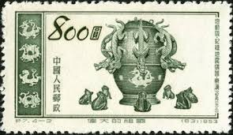 |
| eBay | Rare China, Bank of Chinan 1945 500 Yuan PMG 55 Regular Serial Number Green 牛耕 | eBay | 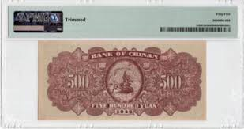 |
| eBay | CHINA 20 Cents 1933, Kee Kwan Motor Road Co Ltd, PMG 66 EPQ Gem UNC, S/M#C85 | eBay | 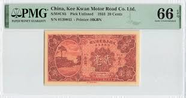 |
| eBay | *China Banknote, Bank of Chinan 2 Yuan 1939, P-S3068, communist bank [2147] | eBay | 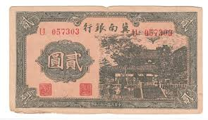 |
| eBay | Rare China Banknote 1943 100 Yuan Federal Reserve PMG 64 Block ROL Collection | eBay | 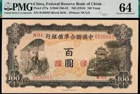 |
| eBay | Ancient Chinese banknotes, 1,000 wen 1930, Republic of China RARE | eBay | 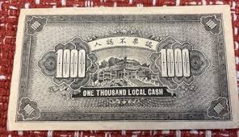 |
| eBay | China Taiwan 100 Yen (with Bank stamp), 1945, P 1932b, VF splits | eBay | 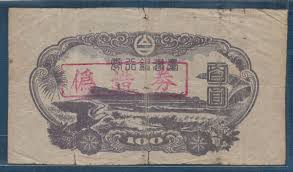 |
| eBay | 10 Yuan China Puppet Bank Banknote #7 | eBay | 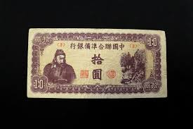 |
| eBay | China Banknote Kwangsi 1921 10 Cents PMG 64 EPQ Kweilin Collection | eBay | |
| eBay | Collectible Hell Bank Notes Joss Currency - 3 Different UNC Bills Gr8 Condition! | eBay | |
| Mercari | People's Republic China Yuan First Issue | Mercari | |
| eBay | CHINESE 1891-1928 UNIFACE PROVINCIAL STATE x 1 Pcs ancient Old Antique NOTE | eBay | |
| eBay | China Banknote 1949 500 Yuan "Specimen" PMG 62 NET Pick # 842s S/M#C282-56 | eBay | |
| eBay | Taiwan Japanese 100 Yen (2nd issue), 1945, P 1932a, Block 2 , F | eBay | |
| eBay | China, Bank of Shansi Chahar & Hopei 1945 100 Yuan PMG 45 Block CD 晋察冀马车耕地 | eBay | |
| eBay | CHINA Central Bank of China 1944 100 Yuan Fine #CU80917 | eBay | |
| eBay | Sinjiang Provincial Bank during the Republic of China，Released in 1949#S282 | eBay | |
| eBay | 👍 1938 CHINA FEDERAL RESERVE BANK 100 YUAN BANKNOTE P-J59 中国联合准备银行 | eBay |